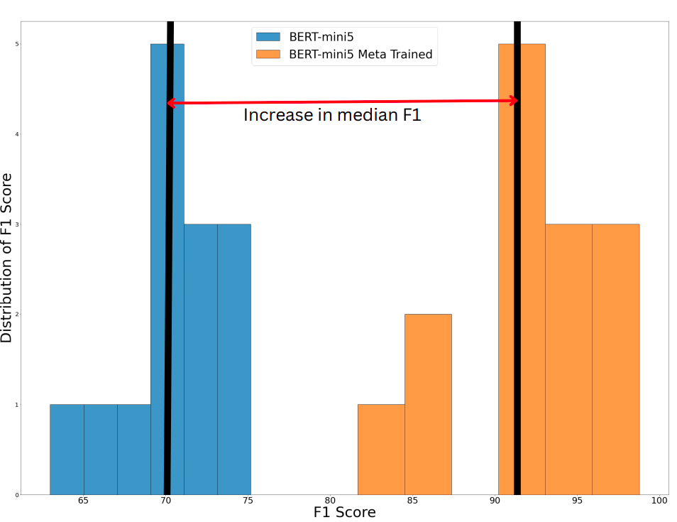

A simple QA task here is defined as a Comprehensive reading task. Where a paragraph is given containing information about a domain. Along with it A question is given which can be answered using the paragraph and the supervision of starting and ending indexes in the paragraph corresponding for that question. A state of the art approach for such a problem is employing a transformer while masking the question and using two classification heads on top of the transformers for predicting start and stop indicies.
The major constrains and challenges we faced are below:
Hence we employ a Meta Learning based training framework for training a shallow transformer model to generalize in outdomain queries while still offering faster convergence on outdomain targets.

Hence the above is the proposed framework along with Bert-Mini-5. For individual domains the meta model is later fine tuned for inference.
$ python preprocess_csv_theme.py --data-csv=train_data.csv
$ python synthetic_gen.py --input_dir=datasets/train_data.csv --ner_limit=2 --use_qa_data=sample_question_answers.csv
This preprocesses the whole dataset into different shards of datasets for different domains. Then synthetically generates question and answer pairs for unannoted paragraphs for improving indomain queries.
$ python meta_train.py --run-name meta_baseline --do-train --lr=1e-4 --meta-lr=5e-3 --meta-epochs=10000
$ python finetune.py
The First command trains a meta model using MAML for the in domain targets and the code is parallized for training individual models on individual in domain set. The second command fine tunes the meta model on a outdomain query using synthetically generated dataset using the paragraphs for the outdomain queries.
we performed model quantization and graph optimization using ONNX to compare the runtime optimization on two models namely small-Electra and mini5-BERT as shown in the figure.Using ONNX runtime optimizations, mini5-BERT only took 120 milliseconds and small-Electra took only 140 milliseconds. We observed that mini5-BERT offered us the best tradeoff between speed and accuracy.
One can observe the improvement due to meta learnt model on outdomain queries. 
The Improvement for quantizing the model can be observed with the the distribution of average inference time for different settings.